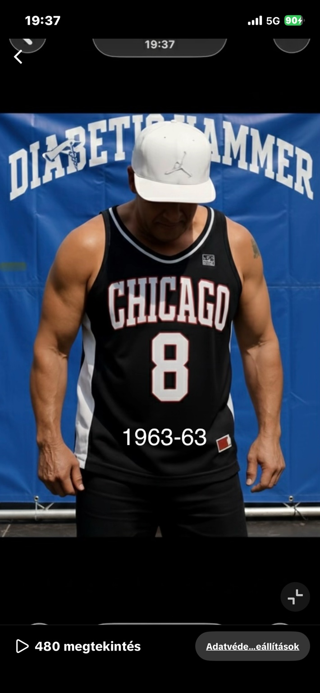
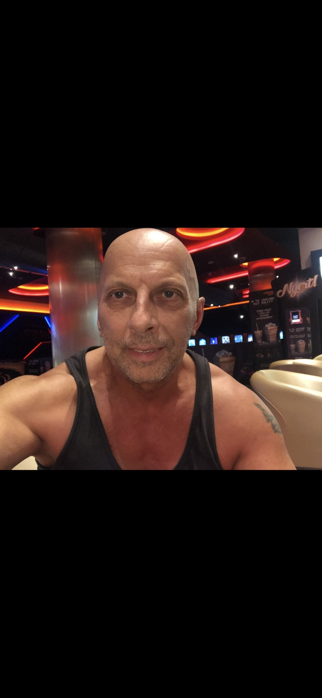
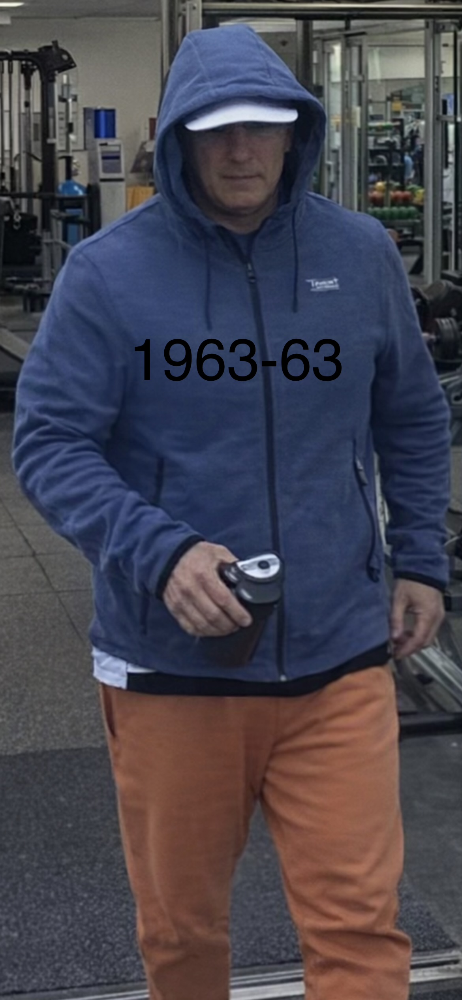
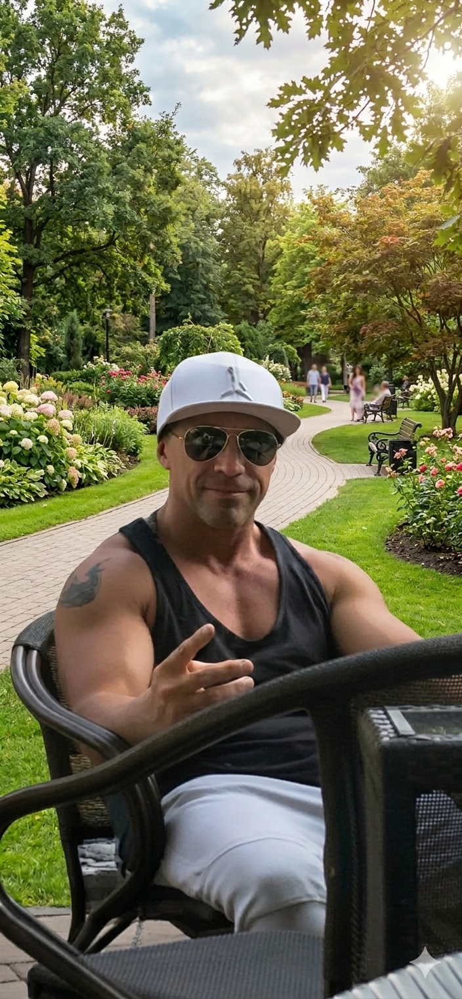
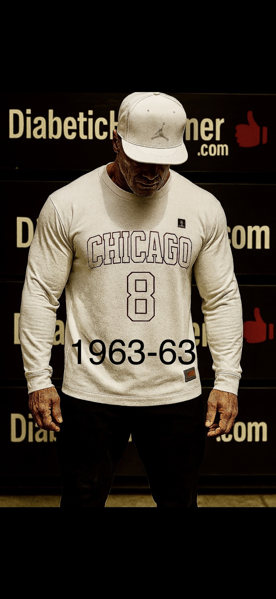
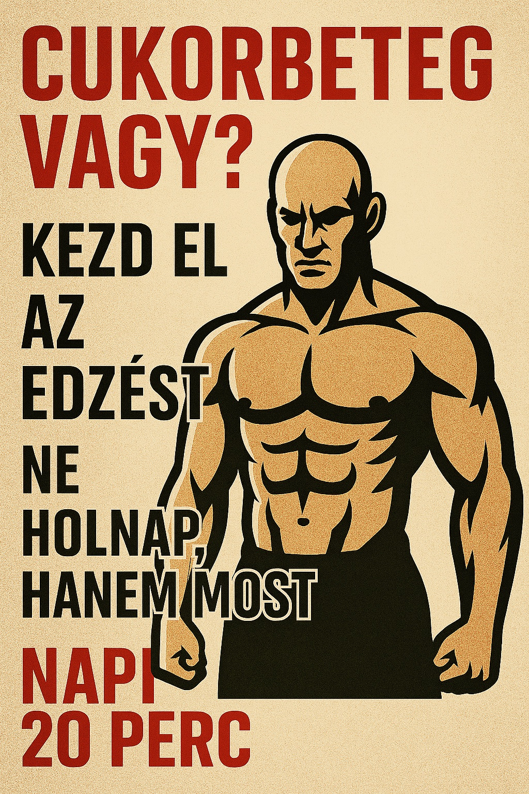

01 / MOZGÁS↗
MOZDULJ
A SAJÁT
TEMPÓDBAN.
A mozgás nem verseny. A rendszeresség, a fokozatosság és a tested jelzéseinek tisztelete számít.
VALÓDI ÉLET. VALÓDI ERŐ.
Cukorbetegséggel élni nem mindig könnyű. De az élet több egy diagnózisnál. Ez az oldal a mozgásról, a kitartásról, a hétköznapi küzdelmekről és az újrakezdés erejéről szól.
A DiabeticHammer nem tökéletes emberekről és hibátlan napokról szól. Hanem valódi tapasztalatokról.
Arról, hogyan találjuk meg a lendületet, hogyan figyelünk magunkra, hogyan állunk fel egy nehezebb nap után, és hogyan őrizzük meg azt, ami igazán fontos: az életkedvet.
Nem kell minden nap győzni. Elég, ha nem mondasz le magadról.
Nincs mindenkire érvényes recept. Van viszont figyelem, tapasztalat és a saját ritmusod.
A mozgás nem verseny. A rendszeresség, a fokozatosság és a tested jelzéseinek tisztelete számít.
A mindennapi odafigyelés része a vércukor, a pihenés, a táplálkozás és a saját határaid ismerete.
Ne csak a feladatokat lásd. Legyen helye az örömnek, a családnak, a barátoknak és az élményeknek is.
Van, amikor könnyű.
Van, amikor küzdelem.
Mindkettő az élet része.
Személyes pillanatok, emlékek és állomások. Mert minden út a saját történetünkből áll össze.






Minden nap más. Minden történet hozzátesz valamit. Itt olvashatod a DiabeticHammer friss írásait.
A történetek betöltése…
Ha kérdésed van, megosztanád a saját történetedet, vagy beszélgetnél a sportról és a cukorbetegséggel való aktív életről, örömmel fogadom az üzenetedet.